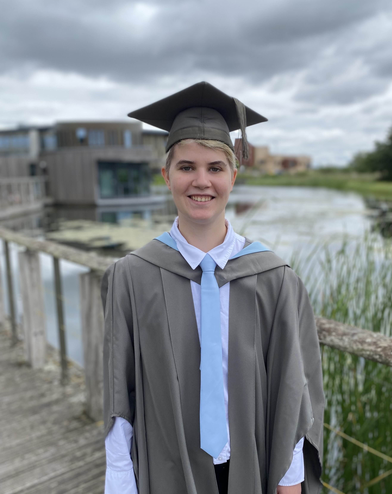

Welcome! This website is part portfolio, part personal archive; a place to collect the projects I've worked on, the skills I've developed, and the things I'm proud of.
It includes everything from mobile games and academic essays to experimental PC builds and creative side projects.
You'll find technical breakdowns, design insights, and a few personal touches along the way.
Whether you're here to check out my work or just have a browse, feel free to click around and explore!
About Me
Hey! I'm Alex, a recent Interactive Media graduate who's all about creativity, whether it's digital or hands-on. I love building playful, meaningful experiences through game design, but I also spend a lot of time crafting, crocheting, and experimenting with new ideas just for the fun of it. Whether I'm designing a mobile game or stitching together a weird little plush, I'm definetly happiest when I'm making something.

I've been into games for as long as I can remember, it all really started when my parents brought home a Nintendo Wii.
I spent hours racing my siblings in Mario Kart and quickly fell in love with the joy of playing together.
Later on, I got a tablet and poured countless hours into mobile games, before saving up to buy a second-hand Xbox 360, then eventually a PS4.
Gaming was something I shared with my siblings; we played together, competed, and bonded over it.
It was more than just a solo hobby; it was part of how we connected.
Over time, it also became something I worked for (literally) saving up money from part-time jobs to buy the consoles and gear I wanted.
I bought my Nintendo Switch on release day and it became a constant companion, especially during lockdown when it helped me stay grounded and entertained.
Around the same time, I started exploring PC gaming, even though my laptop could barely handle most games, and in December 2021, I built my first (and current) gaming PC after saving up from a part-time job.
That build felt like a milestone: something I earned, made, and could use to create and play in new ways.
Gaming has always been more than just a hobby for me, it's how I've met most of my closest friends, shared amazing memories, and built connections with people around the world.
Those experiences, both online and in person, shaped who I am today.
That's a big part of why I chose to study Interactive Media: I wanted to learn how to make the kinds of games and digital experiences that brought me and so many others together.
When I'm not working on digital projects, I love getting creative in more hands-on ways.
I'm really into crochet, diamond art, and colouring or drawing as a way to relax and unwind.
I also enjoy getting outside for walks, especially when I need a break from screens.
I used to be really active in sports, but after a knee and hip injury, I've shifted my focus to more gentle and creative hobbies, and honestly, I've come to really value the slower pace and the chance to make things just for fun.
Qualifications
Bachelor Degree | The University of York | 2022-2025
- Grade 2:1 | BSc Interactive Media
A-Levels | Peter Symonds College | 2020-2022
- Grade A | Maths
- Grade C | Further Maths
- Grade C | Biology
GCSEs | The Hurst Community College | 2015-2020
- Grade 9 | Maths, Biology, Chemistry, Physics, Computer Science
- Grade 8 | English Language, Further Maths
- Grade 7 | English Literature, Geography
- Grade 6 | French